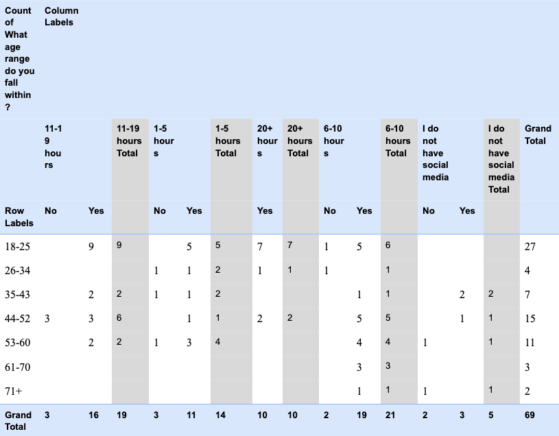
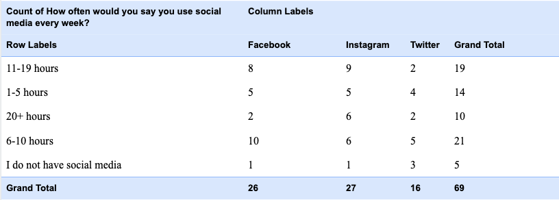
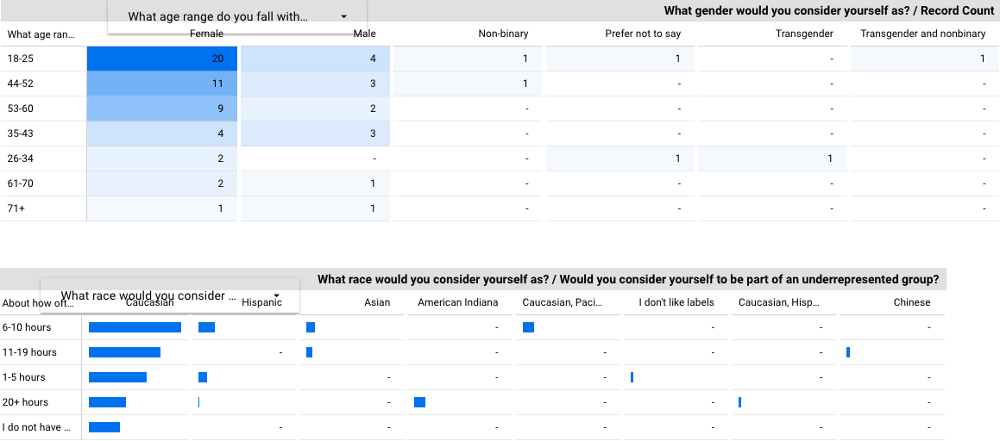

Below you will find charts of our survey data as well as explanations surrounding the meaning of these charts

This first chart is a pivot table made in excel of how many people in each age range said our social media posts helped them understand our main message and how often they use social media. This one was made because we thought people who spent more time on social media would understand the message of our posts more.

This chart is a pivot table made in excel that shows how much respondents of our survey use social media per week and which type of our social media posts they liked best. This one was made because we thought that it might show that certain people liked a type of social media post more if they spent more time on social media as well as be more involved in the culture of social media.

The first of the two tables is an age range based heat map. This heat map was made to show where our main age range and genders were. The good thing about this pivot table with the heat map is that your eyes are drawn directly to the area that got the most responses (Females age 18-25). This pivot table also has an age based filter added on it. The second of the two tables google data studio is a pivot table with bars. This table allows for us to see what our responders' races were combined with their social media usage per week. This Pivot table with bars also has a filter on it that allows us to filter by race. As we can see by this table, our responses were all over the board.